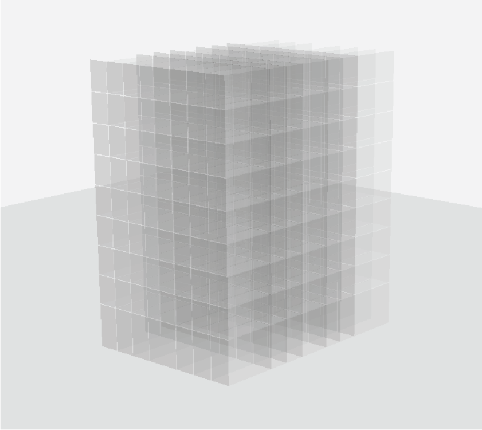
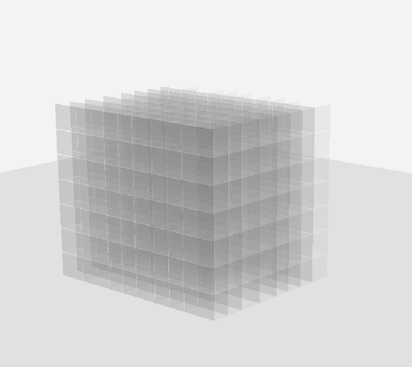
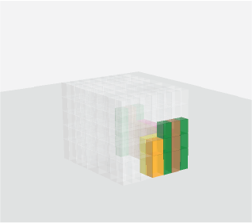
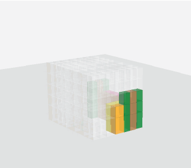

Many design tasks are essentially sequential in nature, which requires numerous iterations and is often time-consuming due to the use of heuristics or manual approaches \cite{Peters, rahman2021predicting, shergadwala2018quantifying}. We argue that the sequential approach to engineering design is particularly useful and convenient not only from the technical perspective but also from the design perspective. The sequential approach can allow human designers to understand, intervene and modify an existing design and thus have the potential to accelerate the design pipeline by a large margin.
While previous approaches focused on learning only the final design instead of sequential design tasks, we propose to encode the design knowledge from a collection of expert or high-performing design sequences and extract useful representations using transformer-based models. Later we propose to utilize the learned representations for crucial downstream applications such as design preference evaluation and procedural design generation. We develop the preference model by estimating the density of the learned representations whereas we train an autoregressive transformer model for sequential design generation. We demonstrate our ideas by leveraging a novel dataset of thousands of sequential volumetric designs. Our preference model can compare two arbitrarily given design sequences and is almost 90% accurate in evaluation against random design sequences. Our autoregressive model is also capable of autocompleting a volumetric design sequence from a partial design sequence.
Our transformer based model can successfully reconstruct voxel sequences.




@article{alam2023representation,
author = {Alam, Md Ferdous and Wang, Yi and Tran, Chin-Yi and Luo, Jieliang},
title = {Representation Learning for Sequential Volumetric Design Tasks},
journal = {arXiv preprint arXiv:2309.02583},
year = {2023},
}